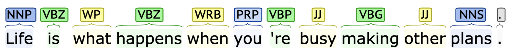
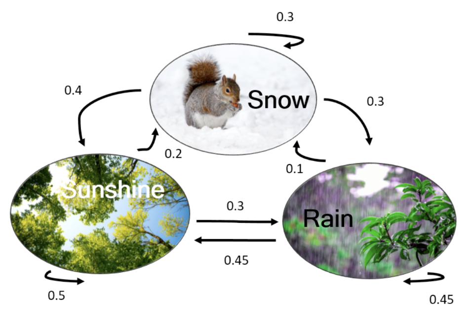
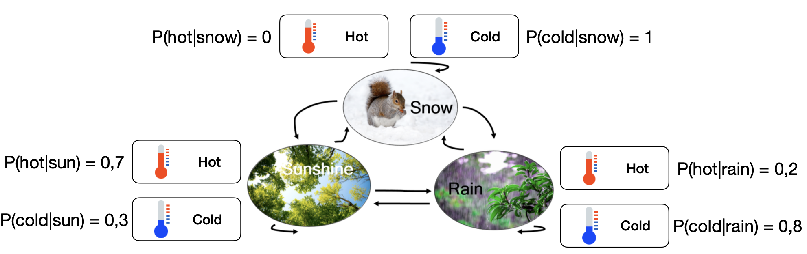
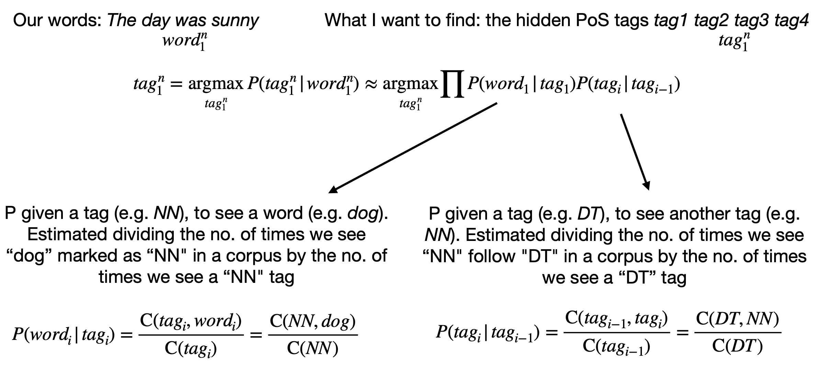
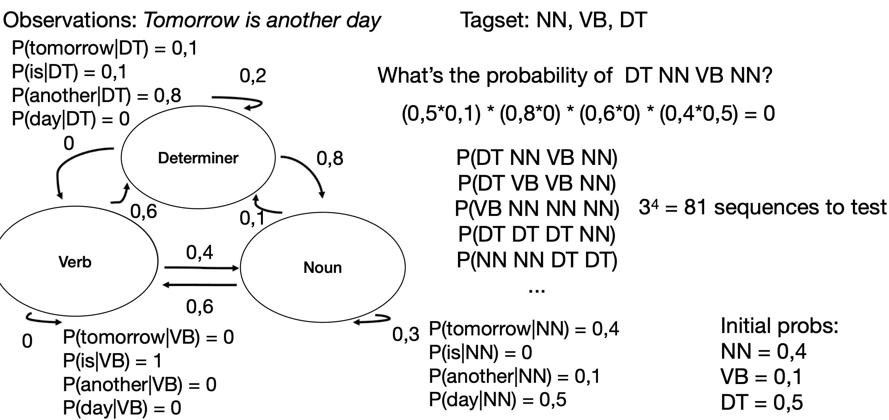
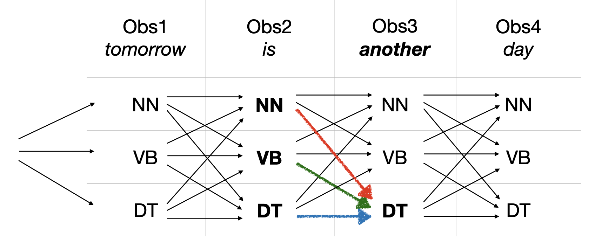
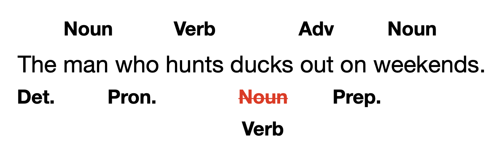
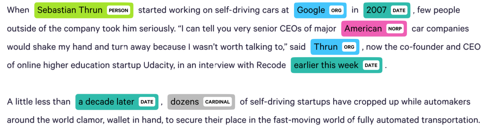
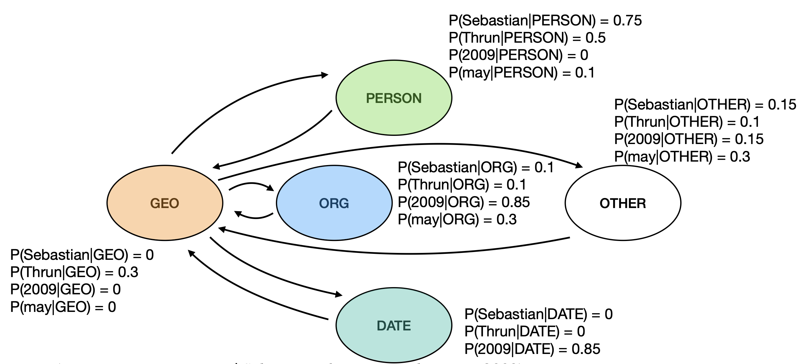
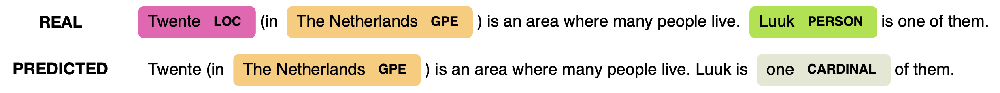

Parts of Speech
Parts of speech are a way to divide words into categories: verbs are actions (“running”, “eating”, “thinking”, …), nouns are stuff (things, people, abstract concepts such as “eternity”), adjectives are qualities (“good”, “tall”, “white”, “loyal”), etc.
So the question is: How can the computer automatically annotate the PoS tags for a sentence?

Markov Chains

- Probability of starting from rain: 0.4
- Probability of starting from snow: 0.3
- Probability of starting from sunny: 0.3
Probability of the sequence rain snow sunny rain rain?
Background
Markov Assumption:
This expresses that the probability of the the next state is dependent only on the previous state, not on the entire history.
Let:
- be a set of states
- be a transition probability matrix with each representing the probability of moving from state to state .
- be an initial probability distribution over states. is the probability that the Markov Chain will start from state . Also,
What if we are in a room with no windows and we cannot look at the weather outside, but we can feel the temperature?

Hidden Markov Models
This expression finds the most likely tag sequence given a word sequence .
P of a tag is only dependent on previous tag:
P of seeing a word is only dependent its PoS tag, not on previous words or PoS tags:

- means “the number of times the word dog was tagged as NN (noun)” in the corpus.
- means “the number of times the tag NN follows the tag DT (determiner)” in the corpus.
- means “the total number of times the tag NN appears” in the corpus.

For the first, we take the initial probability of and . For the second, we see on the graph that and and so on.
Viterbi Algorithm
The Viterbi algorithm is a dynamic programming algorithm for finding the most likely sequence of hidden states in a Hidden Markov Model (HMM).
| Tag | Obs1 (tomorrow) | Obs2 (is) | Obs3 (another) | Obs4 (day) |
|---|---|---|---|---|
| NN | 0.0048 | 0.00384 | ||
| VB | 0 | 0.0015 | 0.000037 | |
| DT | 0.05 | 0.0016 | 0.000101 |
To compute the first column:
To compute the following columns:
- We don’t assume the previous tag.
- We calculate the probability of each possible path from the previous column
- We pick the one with the highest score → this is the Viterbi step

To compute the first value on the second column:
| Previous Tag | P(“is” | |||
|---|---|---|---|---|
| NN | 0.16 | 0.3 | 0.1 | 0.16 × 0.3 × 0.1 = 0.0048 |
| VB | 0 | 0.4 | 0.1 | 0 × 0.4 × 0.1 = 0 |
| DT | 0.05 | 0.8 | 0.1 | 0.05 × 0.8 × 0.1 = 0.004 |
How to decide if we’re good at PoS tagging?
We need a measure of performance.

Ideas:
- Use techniques to deal with words that did not appear in the training corpus
- Use techniques that take into account the next words too
- Improve the annotation
Named Entity Recognition (NER)

-
NER is more useful than POS tagging in many tasks (sentiment analysis towards a company or person, question answering, information extraction, …)
-
However, it is a harder task than POS tagging, as in POS tagging, entities can be ambiguous:
- [PER Washington] was born into slavery on the farm of James Burroughs.
- [ORG Washington] went up 2 games to 1 in the four-game series.
- Blair arrived in [LOC Washington] for what may well be his last state visit.
- In June, [GPE Washington] passed a primary seatbelt law.
-
In POS tagging, each words get one tag. In NER, we need to find and segment the entities
HMM for NER

While HMM has been used for NER, it is not the most popular candidate; Conditional Random Fields and other models are better suited for the task.
When is NER useful?
- classifying user intentions (e.g. when speaking to Siri/Alexa/Google Assistant: “add a meeting with Lorenzo at 15:45 at the Starbucks”)
- detecting mentions of a product/company online, before extracting opinions and doing sentiment analysis on them
- and more …
How to decide if we’re good at NER

We summarize these in one number, the F1 score, by taking their harmonic mean:
F1 score for state-of-the-art NER is ~94% on news (but only ~50% on social media)